Todo lo que se ha propuesto en la fase local desde 2012. Por tema, por año o por título; cada entrada lleva a su prueba, donde están el enunciado en PDF, en las lenguas en que existe, y la solución cuando la hay. Un problema puede estar en varios temas; aquí aparece bajo el primero.
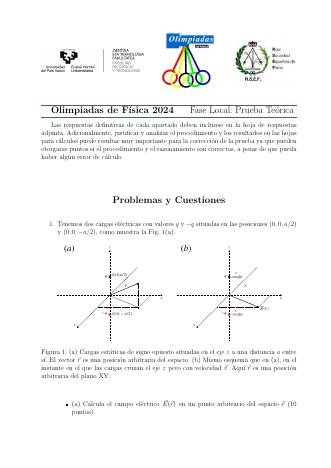
problemaTiro a puerta con viento lateral2024 · teórica · 25 pts · Josu M. Igartua y Mikel SanzUn balón a 25 m/s desde 61 m con 1 m/s de deriva lateral: ¿entra en una portería de 6 × 2,5 m? (se desvía 3,05 m frente a 3 m).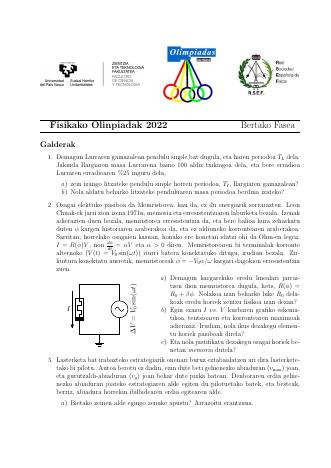
cuestiónDos pilotos de carreras2022 · teórica · 15 pts · Josu M. Igartua y Mikel SanzLa mitad del tiempo o la mitad de la distancia a velocidad máxima: quién gana y dónde debe acelerar el segundo para empatar.problemaLa casa del tejado semicircular2022 · teórica · 40 pts · Josu M. Igartua y Mikel SanzLanzar una pelota a una cúpula: velocidad mínima y ángulo, rango de ángulos, alcanzar la cima, el punto de impacto que la devuelve por el mismo camino y el alcance si pierde un cuarto de su energía.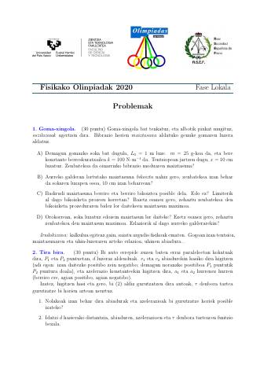
problema«Vuelta y revuelta»2020 · teórica · 30 pts · Íñigo L. EgusquizaEl problema de 2018 y 2019, por tercera vez.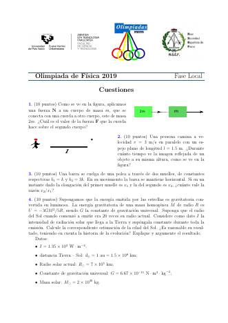
problema«Suelta la pelota» (medir g)2019 · teórica · Íñigo L. EgusquizaMedir g con un electroimán y una fotopuerta: descarte de valores atípicos, media, retraso sistemático de 21 ms, precisión.problema«Vuelta y revuelta»2019 · teórica · Íñigo L. EgusquizaEl problema de 2018, de nuevo.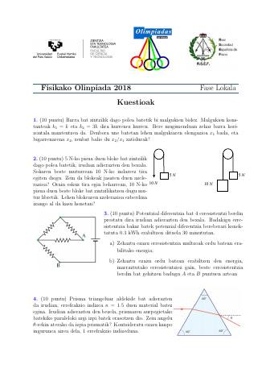
problema«Vuelta y revuelta»2018 · teórica · 20 pts · Íñigo L. EgusquizaDos coches con aceleraciones constantes que se cruzan dos veces: distancia según el intervalo.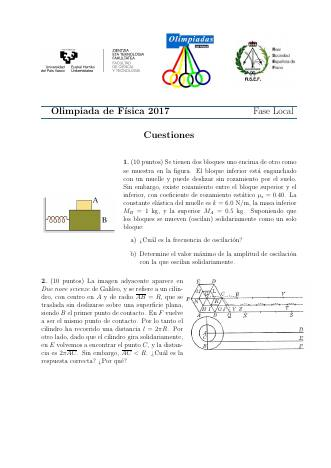
cuestiónLa rueda de Aristóteles2017 · teórica · Josu M. IgartuaLa paradoja de la rueda en las Dos nuevas ciencias de Galileo.problemaMalabares2017 · teórica · Josu M. IgartuaPeriodo, tiempo de vuelo y altura según el número de bolas; en la Luna y en la Tierra (Magnusson y Tiemann, The Physics Teacher, 1989).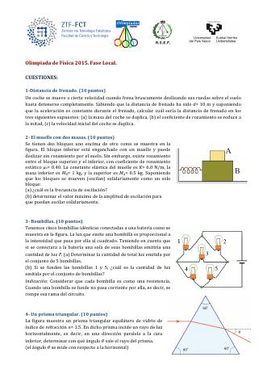
problemaUn muelle en el techo2015 · teórica · Raúl B. Pérez SáezUn objeto lanzado hacia arriba choca con un muelle fijado al techo: compresión máxima.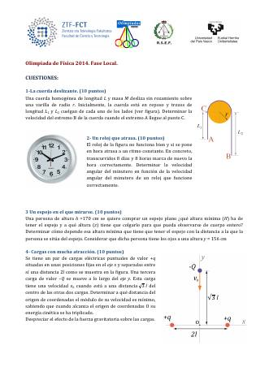
cuestiónUn reloj que atrasa2014 · teórica · Raúl B. Pérez SáezUn reloj vuelve a estar en hora tras 8 días y 8 horas: velocidad angular del minutero.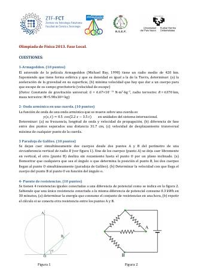
problemaUn proyectil que explota2013 · teórica · Raúl B. Pérez SáezUn proyectil se divide en tres fragmentos en el punto más alto: conservación del momento y alcances.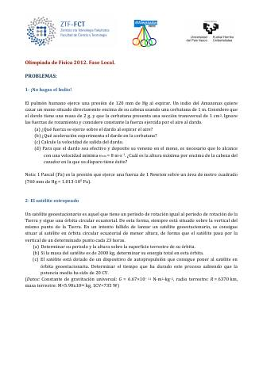
cuestiónUn nadador y unos salvavidas en un río2012 · teórica · Raúl B. Pérez SáezMovimiento relativo en una corriente; gráficas posición–tiempo.cuestión«¡Cuánto más lento antes llega!»2012 · teórica · Raúl B. Pérez SáezLa paradoja de las dos raíces del lanzamiento vertical.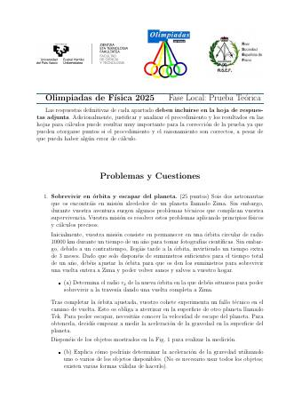
problemaUna cuerda sobre el borde de la mesa2025 · teórica · 15 pts · Josu M. Igartua y Mikel SanzLa fracción máxima que puede colgar con rozamiento estático: x/L = μ/(1+μ).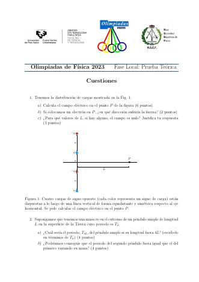
cuestiónBungee jumping2023 · teórica · 16 pts · Josu M. Igartua y Mikel SanzConservación de la energía con una cuerda elástica: a qué altura del lago quedan las manos de Jon, y cuánto lastre añadir para que lo toquen.cuestiónUna cuerda entre dos masas2019 · teórica · Íñigo L. EgusquizaTensión en la cuerda entre m y 2m empujadas por una fuerza.cuestiónUna barra sobre dos muelles2019 · teórica · Íñigo L. EgusquizaLa cuestión de 2018, de nuevo.cuestiónUna barra colgada de dos muelles2018 · teórica · Íñigo L. EgusquizaMuelles de constantes k y 3k: cociente de alargamientos.cuestiónTirar con 10 N o colgar 10 N2018 · teórica · Íñigo L. EgusquizaUn bloque de 5 N arrastrado por una fuerza de 10 N frente a un peso de 10 N colgado de una polea.problema«Suelta la pelota»2018 · teórica · 20 pts · Íñigo L. EgusquizaVelocidad mínima de una bola en una varilla o en un hilo para golpear la barra del pivote (The Physics Teacher, 2005).cuestiónLa distancia de frenado2015 · teórica · Raúl B. Pérez SáezCómo cambia con la masa, el coeficiente de rozamiento y la velocidad.cuestiónUna cuerda que desliza sobre una barra2014 · teórica · Raúl B. Pérez SáezVelocidad del extremo de una cuerda que resbala sin rozamiento.problemaUn hilo que se rompe2014 · teórica · Raúl B. Pérez SáezUna masa en un círculo vertical; el hilo se rompe al alcanzar 11T/8: altura alcanzada y mejor momento para romperse.cuestiónLa paradoja de las cuerdas de Galileo2013 · teórica · Raúl B. Pérez SáezPor qué todas las cuerdas de una circunferencia que parten del punto más alto se recorren en el mismo tiempo.cuestiónSatélites que arden al volver2012 · teórica · Raúl B. Pérez SáezPor qué un satélite se quema al reentrar en la atmósfera y no al ser lanzado.problema«¡No hagas el indio!»2012 · teórica · Raúl B. Pérez SáezUna cerbatana: de la presión de los pulmones a la fuerza, la aceleración y la velocidad del dardo; altura máxima para alcanzar a un mono.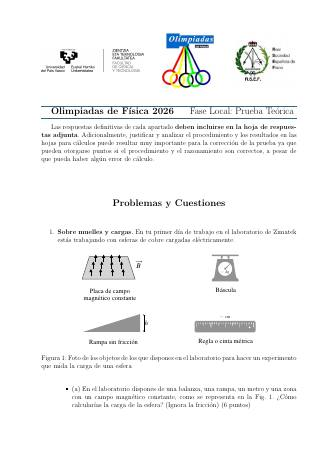
problemaÓrbitas y meteoritos2026 · teórica · 40 pts · Josu M. Igartua y Mikel SanzLa estación TEK26 en órbita circular: velocidad, periodo y energías; tiempo y velocidad de impacto de un meteorito; el choque elástico y su efecto sobre la órbita.problemaSobrevivir en órbita y escapar del planeta2025 · teórica · Josu M. Igartua y Mikel SanzTercera ley de Kepler para acortar un periodo orbital, diseñar una medida de g con objetos cotidianos y la velocidad de escape (≈ 6,6 km/s).problemaUn túnel a través de la Tierra2024 · teórica · 35 pts · Josu M. Igartua y Mikel SanzFuerza proporcional a r: movimiento armónico, velocidad máxima √(gR), travesía de π√(R/g) ≈ 42 min y la velocidad equivalente de un avión.problemaLeyes de Kepler y órbitas elípticas2023 · teórica · 35 pts · Josu M. Igartua y Mikel SanzDe una órbita circular a una elíptica tras un cambio tangencial de velocidad: periastro, apoastro, semiejes, segunda ley de Kepler, periodo y la órbita de escape parabólica.cuestiónLa edad del Sol2019 · teórica · Íñigo L. EgusquizaLa estimación de Kelvin y Helmholtz por contracción gravitatoria.problemaEl balance de energía de un satélite2014 · teórica · Raúl B. Pérez SáezUn satélite a H = 2R: condición cinética = potencial, número de órbitas.cuestiónEl asteroide de Armageddon2013 · teórica · Raúl B. Pérez SáezGravedad en la superficie y velocidad de escape de un asteroide.problema«El satélite estropeado»2012 · teórica · Raúl B. Pérez SáezUn satélite que no llega a la órbita geoestacionaria (periodo sinódico de 23 h): altura, energía y tiempo para alcanzarla con un motor de 20 CV.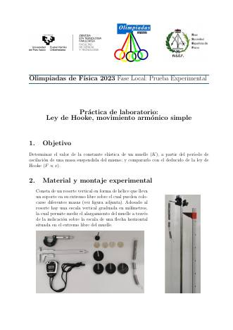
prácticaLey de Hooke, movimiento armónico simple2023 · experimental · Josu M. Igartua y Mikel SanzLa constante de un muelle por calibración estática (18 puntos) y dinámica (T² frente a M, 12 puntos), por mínimos cuadrados; la masa efectiva (α = 1/3) frente a la masa medida y a la estimada con la densidad del hierro y el volumen del alambre, leído en fotografías del calibre y el micrómetro.cuestiónPéndulo2023 · teórica · 8 pts · Josu M. Igartua y Mikel SanzEl periodo con cuatro veces la longitud; si cambiar la masa puede igualar los periodos.cuestiónPéndulo en la Luna2022 · teórica · 10 pts · Josu M. Igartua y Mikel SanzPeriodo en la Luna (masa 1/100 y radio 1/4 de los de la Tierra); si cambiar la masa del péndulo conserva el periodo.cuestiónCuestión experimental2022 · teórica · 20 pts · Josu M. Igartua y Mikel SanzCinco pares (m, T) de un oscilador masa–muelle: linealizar con T², representar, obtener k de la pendiente con su error y predecir T para 10 kg.cuestiónDos bloques sobre un muelle2017 · teórica · Josu M. IgartuaLa cuestión de 2015, de nuevo.cuestiónDos bloques sobre un muelle2015 · teórica · Raúl B. Pérez SáezFrecuencia de dos bloques apilados y amplitud máxima sin que el de arriba deslice.problemaPéndulos que chocan2015 · teórica · Raúl B. Pérez SáezPeriodo de gran amplitud, choque elástico, rango de cocientes de masas.problemaLa constante y la masa de un muelle2015 · teórica · Raúl B. Pérez SáezCon datos de periodo frente a masa: ajuste de T² frente a M.problemaUn péndulo en un globo2013 · teórica · Raúl B. Pérez SáezUn péndulo en altura que vuelve a coincidir en fase con otro en el suelo cada 107 oscilaciones: la altura del globo (unos 60 km); la profundidad con el mismo periodo; la caída por un pozo.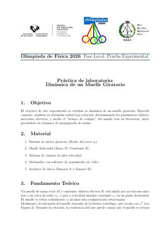
prácticaDinámica de un muelle giratorio2026 · experimental · 50 pts · Josu M. Igartua y Mikel SanzUn muelle que gira se suelta: cinemática y tiempo de colapso, equilibrio cuasiestático, arrastre y caída, propagación de la señal y argumento dimensional, con datos sintéticos de vídeo rápido (14 ejercicios).problemaEl efecto chocolate caliente2023 · teórica · 30 pts · Josu M. Igartua y Mikel SanzOndas estacionarias en una taza (cerrada–abierta) y cómo las burbujas bajan la velocidad del sonido al remover (Crawford, 1980): armónicos, densidad de la mezcla, evolución de la frecuencia.problema«Una tensa goma»2020 · teórica · 30 pts · Íñigo L. EgusquizaLa frecuencia de vibración de una goma estirada, cómo doblarla y su valor máximo.problemaEl tubo silbón2017 · teórica · Josu M. IgartuaLas llegadas de los ecos de N rebotes en un tubo largo y la frecuencia límite (Crawford, Am. J. Phys., 1988).problemaLa velocidad del sonido en un tubo2014 · teórica · Raúl B. Pérez SáezCon las frecuencias de resonancia de un tubo abierto: corrección de extremo, gráfica f frente a n, pendiente y ordenada. El primer problema de tratamiento de datos de la fase local.cuestiónUna onda armónica en una cuerda2013 · teórica · Raúl B. Pérez SáezFrecuencia, longitud de onda, velocidad, diferencia de fase y velocidad transversal máxima.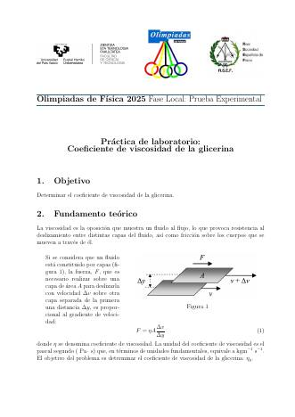
prácticaCoeficiente de viscosidad de la glicerina2025 · experimental · 10 pts · Josu M. Igartua y Mikel SanzDiámetro, masa y densidad de una bola de acero; velocidad límite en glicerina desde una secuencia de fotografías; corrección de pared; ley de Stokes e incertidumbres.problemaAluminio y hierro en una balanza2025 · teórica · 20 pts · Josu M. Igartua y Mikel SanzUn kilo de cada en una balanza: en el aire, sumergidos en agua (el empuje la inclina) y el brazo que la equilibra.problema«Globos comunicantes»2019 · teórica · Íñigo L. EgusquizaDos globos de distinto tamaño unidos por un tubo: cuál crece.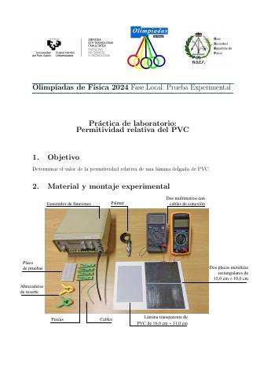
prácticaPermitividad relativa del PVC2024 · experimental · 10 pts · Josu M. Igartua y Mikel SanzLa impedancia en alterna de un condensador de placas paralelas con una lámina de PVC: montaje, circuito, espesor de la lámina y medidas en fotografías del multímetro; εr con su incertidumbre.problemaEl dipolo eléctrico2024 · teórica · 40 pts · Josu M. Igartua y Mikel SanzCampo de dos cargas ±q, campo magnético de las cargas en movimiento (Biot–Savart), aproximación dipolar lejana y dipolo en un campo uniforme (par y alineamiento).cuestiónDistribución de cargas2023 · teórica · 11 pts · Josu M. Igartua y Mikel SanzCuatro cargas de signo alterno en una recta: campo en un punto, fuerza sobre un electrón y puntos de campo nulo.problema«Una expansión electrizante»2020 · teórica · 40 pts · Íñigo L. EgusquizaUna pequeña diferencia entre las cargas del protón y del electrón como motor de la expansión del universo (tipo Lyttleton–Bondi).problema«Mantén la distancia»2018 · teórica · 20 pts · Íñigo L. EgusquizaDos cargas en un campo uniforme que conservan su separación (un positrón y un protón).problemaEl reflectrón2017 · teórica · Josu M. IgartuaEspectrometría de masas por tiempo de vuelo: el espejo de iones que hace el tiempo independiente de la energía.cuestiónUna carga entre dos cargas2014 · teórica · Raúl B. Pérez SáezUna carga −Q en el eje entre dos cargas +q: posición de velocidad mínima.problemaUn electrón entre placas2013 · teórica · Raúl B. Pérez SáezDesviación de un electrón entre las placas de un condensador hasta una pantalla.cuestiónTres cargas en un cuadrado2012 · teórica · Raúl B. Pérez SáezCampo y potencial en el vértice libre; trabajo para llevar una carga al infinito.Algunas cuestiones volvieron en ediciones posteriores.